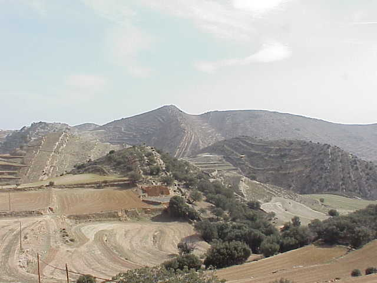
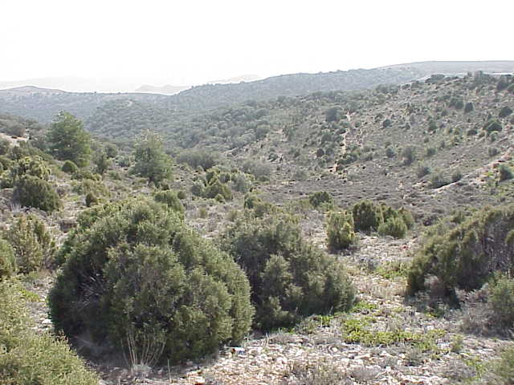
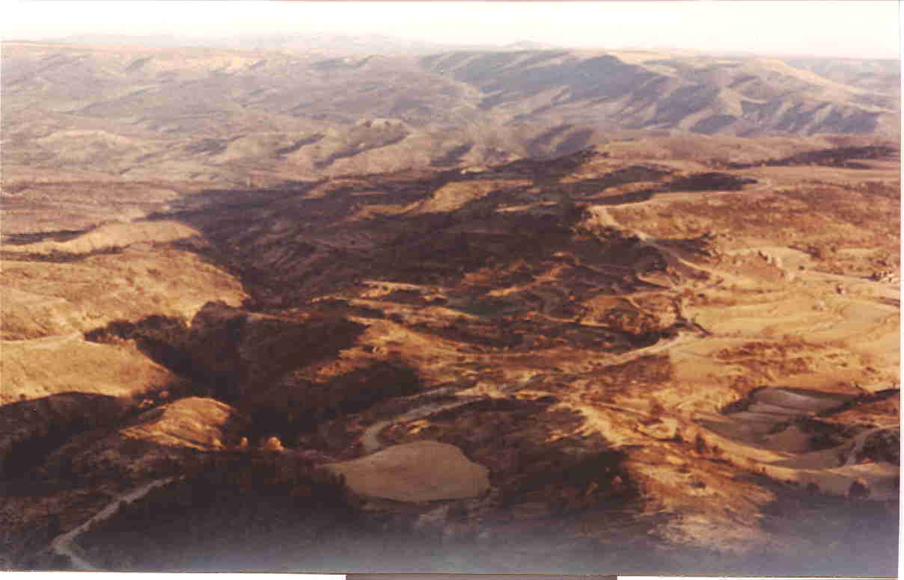
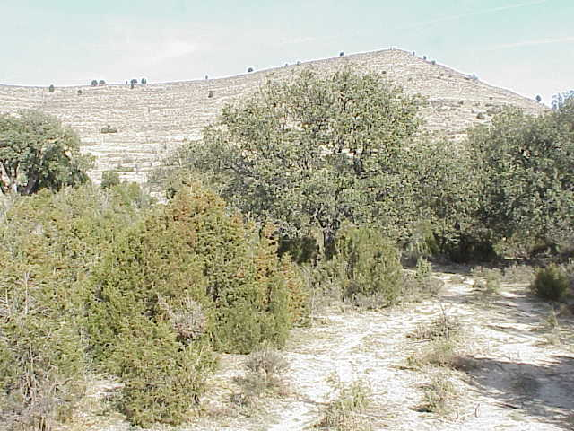
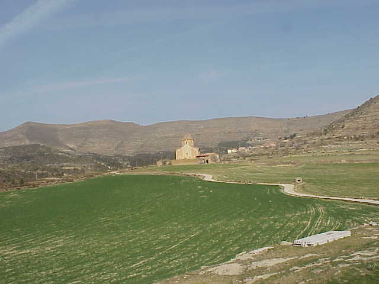

Flora y fauna
La vegetación de la comarca de Els Ports es característica y propia de las duras condiciones climáticas, de un suelo a menudo escaso y de un relieve montañoso.
Vegetación
La vegetación de la comarca de Els Ports es característica y propia de las duras condiciones climáticas, de acusada continentalidad, de un suelo a menudo escaso y de un relieve montañoso. También la influencia del hombre sobre la cubierta vegetal es importante, con transformaciones agrícolas y ganaderas, deforestaciones, incendios, etc.
La vegetación climatófila (dependiente del clima y la topografía) está formada por carrascales (bosques de Quercus rotundifolia), robledales (bosques de Quercus faginea) y, a veces, bosques mixtos de ambos, que pueden alternarse con pinares de pino negro (Pinus nigra var. salzmannii).
Sin embargo, en Olocau no se encuentran bosques ejemplares como los mencionados. Quedan restos de carrascal, pero está más o menos degradado o explotado. Se encuentran especies asociadas a la carrasca, como las cadas (Juniperus oxycedrus) y sabinas (Juniperus phoenicea). En los estratos inferiores de vegetación de los carrascales encontramos Genista hispanica, tomillos (Thymus vulgaris) y listones (Brachypodium retusum). Así ocurre en la zona baja, antes de llegar a Olocau por la carretera de La Mata, tras pasar la ermita de San Marcos.



En las zonas más altas, en concreto en los carrascales que son atravesados por la carretera de Olocau al Mas del Mojón, encontramos asociados Pinus nigra var. salzmannii y pinos rojos (Pinus sylvestris), sabinas (Juniperus phoenicea) y otras especies de porte más bajo como la santolina, el tomillo, la genista o la gayuba (Arctostaphylos uva-ursi). En las zonas más claras, en las que el carrascal es menos denso, hay más sabinas y aparece algún pino carrasco (Pinus halepensis), y como arbustos se encuentran romero (Rosmarinus officinalis) y gayuba.
En las laderas situadas más al norte, donde hay más sombra y humedad, aún se encuentran restos del bosque original de robles (Quercus faginea), mezclado en las zonas menos densas con sabinas y enebros, si bien son bastante escasos.
En la zona más alta, en concreto en el pico la Manzanera, aparecen mezcladas diversas especies de Juniperus, en concreto Juniperus phoenicea (sabina) con Juniperus communis (enebro) y Juniperus oxycedrus (cada), siendo este último más escaso a estas altitudes. En el estrato inferior encontramos genista (Genista hispanica), gayuba (Arctostaphylos uva-ursi), espliego (Lavandula angustifolia) y tomillo (Thymus vulgaris), así como el prácticamente omnipresente listón (Brachypodium retusum), gramínea adaptada prácticamente a cualquier zona de nuestra provincia. En la parte más alta aparecen arbustos de porte bajo, pulvinulares, los erizones (Erinacea anthyllis), que no hemos observado en otras partes del término municipal y que son típicos de las zonas más altas, de vegetación oromediterránea. Conforme descendemos en altitud van apareciendo carrascas y algún pino.
En las zonas que fueron devastadas por el incendio del año 1994 hemos podido observar una evolución positiva de la vegetación, con abundantes pies de coscoja (Quercus coccifera) y romero como las especies predominantes. Se ve también que están naciendo robles y diversas especies del género Juniperus, principalmente J. phoenicea y J. oxycedrus.
Sin embargo, lo que realmente abunda es un matorral bajo, propio de zonas con escasez de suelo. Dada la continentalidad del clima y la aridez del mismo, los arbustos que encontramos están perfectamente adaptados a estas características, con hojas coriáceas e incluso espinosas, dominando los tomillos, genistas y espliegos. Pueden aparecer ejemplares aislados de Juniperus oxycedrus, así como coscojas (Quercus coccifera) y carrascas (Quercus rotundifolia). Todas estas plantas están completamente adaptadas a las características ecológicas mencionadas, de ahí su gran extensión.
Respecto a la vegetación edafófila (vegetación independiente del clima y de la topografía), la encontramos a lo largo de los cauces, en la zona denominada de la Riera, en la que se encuentran sauces (Salix sp.) primeramente, en el mismo cauce o en zonas inundables, encontrándose detrás los chopos negros (Populus nigra) y los álamos (Populus alba), que a veces se acercan hasta el agua. Como plantas acompañantes encontramos la ortiga (Urtica dioica), la vinca (Vinca difformis), etc., además de plantas espinosas como las zarzas (Rubus ulmifolius) o la roja (Rubia peregrina).


En la zona de las Lomas, a la salida de Olocau en dirección a Todolella, encontramos una vegetación de porte totalmente rastrero, formada por tomillos, genistas y listones principalmente, en la que aparecen entremezclados escasos ejemplares de sabinas. Esto es debido a la altitud y sobre todo a que es una zona con mucho viento y que además ha sido dedicada durante mucho tiempo al pastoreo, por lo que la presencia de árboles y arbustos es muy escasa.
Paisaje
El relieve se caracteriza por la presencia constante de altiplanos calizos, denominados muelas, que alternan con cuencas deprimidas recorridas por ramblas o riachuelos.
El relieve puede definirse como depresión de valle en área de relieve movido. La superficie del suelo se caracteriza por la presencia de aterrazamientos (agrícola singular) y de una corriente de agua semicontinua. La vegetación existente consiste en el arrinconamiento de los bosques y vegetación clímax preexistente para crear un nuevo paisaje diverso y armónico, el paisaje rural. Los elementos artificiales se hallan discordantes con el paisaje, siendo muy visibles y de diversa complejidad. Se trata de un paraje semiabierto.
La explotación de arcillas se halla en estado de abandono. Las escombreras presentes son montículos de pequeña altura (inferior a los 5 m) y poseen un color rojo intenso, destacando del paisaje por su contraste cromático con el verde o amarillo de la vegetación próxima a la zona alterada. En algunas escombreras se han depositado u ocultado vertidos orgánicos o purines procedentes de las granjas colindantes, aprovechando la litología impermeable del terreno.


Uso agrícola del suelo
Se trata de un área con baja capacidad de usos con riesgo de erosión elevado. Existen zonas de cierto aprovechamiento agrícola dedicadas al cultivo de herbáceos (cereales) combinados con vegetación de matorral.
El suelo, aunque poco potente, está poco protegido contra la erosión, sobre todo en algunos puntos. Su evolución será positiva debido al aporte de materia orgánica y a la acción de la vida vegetal y la microfauna.